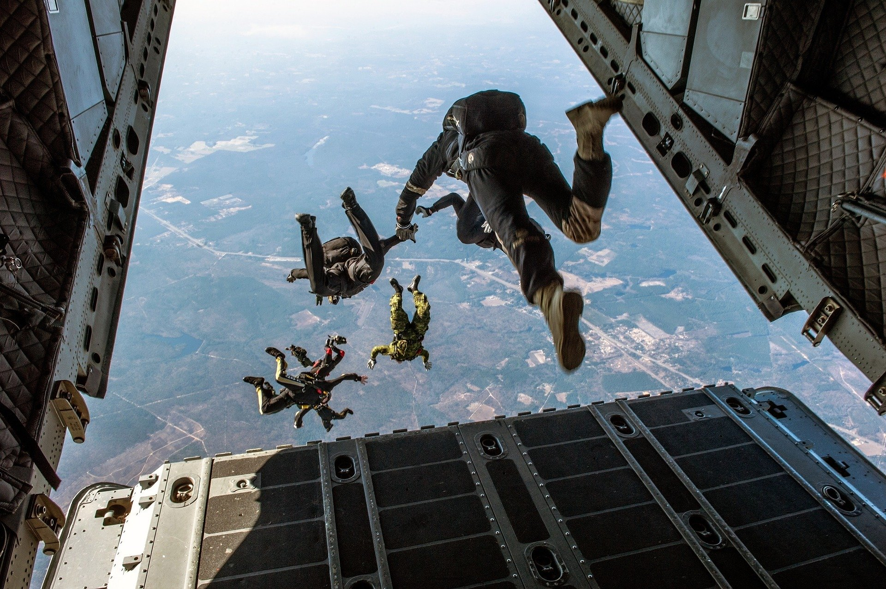

1. Bunjee jumping
Most famous places for this sport across the globe:-
- Nevis highwire,New zealand
- Navajo Bridge,Arizona,USA
- Bhote Kosi RIver,Nepal
- Altopiano di Asiago,Vicenza,Italy
- Macau Tower,China
2. sky diving

Most famous places for this sport across the globe:-
- over the swiss alps,internlake,switzerland
- hawaii,usa
- across the namib desert,namibia
- from the fox glacier,new zealand
- from mount everest
3. surfing

Most famous places for this sport across the globe:-
- canggu,bali,indonesia
- santa teresa,costa rica
- ericeira,pourtgal
- hossegor,france
- san sebestian,spain
4. skiing

Most famous places for this sport across the globe:-
- gulmarg,jammu&kashmir,india
- snowbird,utah,USA
- whistler,canada
- murren,switzerland
- chamonix,france
5. scuba diving
Most famous places for this sport across the globe:-
- great barrier reef,australia
- bali,indonesia
- fotteyo kandu,maldives
- sai kung,hong kong
- el arco,galapogas islands
6. snowboarding
Most famous places for this sport across the globe:-
- snowbird,utah,usa
- cervinia,italy
- verbier,switzerland
- chamonix,france
- Mammoth mountain,california,usa
7. rock climbing
Most famous places for this sport across the globe:-
- red river gorge,kentucky
- acadia national park,maine
- kalymnos,greece
- wadi rum valley,jordan
- yosemite national park,california
8. river rafting
Most famous places for this sport across the globe:-
- pacuare river, costa rica
- tully river,queensland,australia
- colorado river,grand canyon,usa
- chuya river,siberia
- river ganga,rishikesh
Some Adventure Sports are dangerous.so, should only be done under guided supervision.